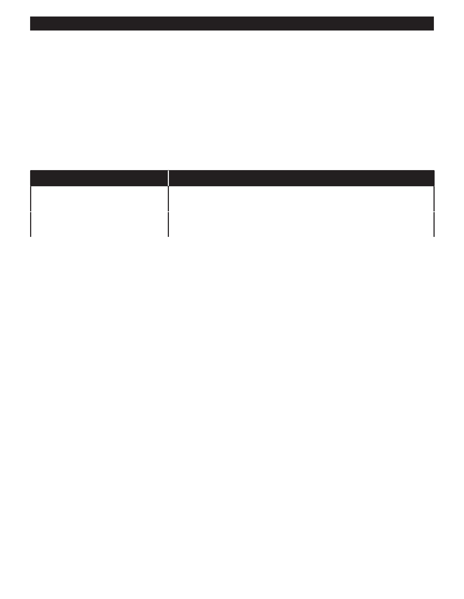

PA RT I C I PA N T R E S O U R C E G U I D E
Fixing a Leaky Garbage Disposal (continued)
How-to Steps: Fixing a Leak at the Dishwasher Connection
1. Tighten the clamp on the dishwasher hose connected to the dishwasher inlet on the disposal.
2. Turn on the water and then the disposal.
3. Check for leaks. Replace the hose if the hose is leaking.
How-to Steps: Fixing a Leak at the Discharge Drain Pipe
Make sure the bolts holding the discharge pipe to the disposal are tight. If they are not, that could be the source of the leak.
If
Then
The bolts are loose
You may have found the problem. Turn on the water, the disposal and check for
leaks once again.
The bolts are tight
The gasket in the discharge drain pipe may be cracked or worn. Replace it, and
then check for leaks once again.
Notes:
46